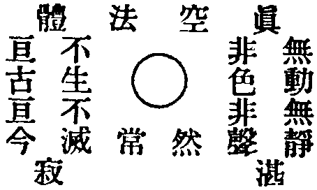

卍新纂大日本續藏經 第26冊
No.575 般若心經註解 (2卷)
【】
第 1 卷
No. 575-A
略移
移者乃權宜捷要。催行拶步。快登彼岸也。
佛生西域。光明普照。傳留心經一本。徧於一方。人皆誦念。不知裏義。所有大顛無垢二祖註解及前後註者尤多。幸而大明正統年間。吾祖出現於世。顯化功德。檢教此經。都得明心。是以門人姜公重請諸佛祖。續固餘言開分之說。替佛祖弘教。施行諸方便覽。眾成勝事。又表金陵遇經道人程情授之辨。固當應眾知間。少板無印。缺於慈念。所以化資重刊書帙。印濟流通。

一卷心經一點真 點真演出許多經
若展此真充法界 千經萬典盡分明
未曾舉念事方圓 聖卷無邊隻眼藏
明心見性真實理 通宗顯教法中王
一點真元空不空 虗靈清淨現圓通
川山透海無窮測 踏破玄崖處處春
看經切要急通宗 宗若通時教亦通
宗教若還通徹了 吾心包褁太虗空
摩訶般若波羅蜜多心經
觀自在菩薩。行深般若波羅蜜多時。照見五蘊皆空。度一切苦厄。舍利子。色不異空。空不異色。色即是空。空即是色。受想行識。亦復如是。舍利子。是諸法空相。不生不滅。不垢不淨。不增不減。是故空中。無色。無受想行識。無眼耳鼻舌身意。無色聲香味觸法。無眼界乃至無意識界。無無明。亦無無明盡。乃至無老死。亦無老死盡。無苦集滅道。無智亦無得。以無所得故。菩提薩埵。依般若波羅蜜多故。心無罣礙。無罣礙故。無有恐怖。遠離顛倒夢想。究竟涅槃。三世諸佛。依般若波羅蜜多故。得阿耨多羅三藐三菩提。故知般若波羅蜜多。是大神呪。是大明呪。是無上呪。是無等等呪。能除一切苦。真實不虗。故說般若波羅蜜多呪。即說呪曰。
揭諦揭諦。波羅揭諦。波羅僧揭諦。菩提薩婆訶
心經畢。
偈曰。
這卷真經本在心 自家寶藏不須尋
猛然檢著無生品 迸出明珠耀古今
這點靈光道上來 只因逐妄墮塵埃
君今要見還鄉路 悟得心經道眼開
這輪心鏡本無塵 因塵難照本來真
塵盡鏡明無一物 自然現出法王身
隨方就圓大摩訶 當面識破出奈河
我今認得西來意 便是長生不老佛
本經註解一總持 仁德君子重意參
吾心亦要普度眾 方纔如是方便刊
知重知因就理是 莫笑書本發狂言
若肯死工都貫徹 就如靈宮井通泉
No. 575
[門@舌]通顯道甚深功德寶卷上
蓋聞往昔因中聖祖出現於世。降生在梵王宮內。乃名悉達太子。尊德釋迦文佛。道號稱能仁也。心懷大德道行。天生有理自然。明通三界無比。願不為王做君。四城門遊翫觀境。見生老病死之人。即往雪山。避靜六年。功圓果滿。迴還太國行孝。先度父母見性。後度耶輸公主。明心向善。辦道出苦。一家四口都得成尊。上前辭親別朝。收拾起鉢盂錫杖。遊方演教四十九年。說法利生三百餘會。讚曰。空本無相。却來現形有體。玄妙無字。說下一覽大藏。吾乃初進入會。遇著心經一卷。人念我聽知也。言言見諦。句句超宗。聞其意趣。納心不捨。學會持誦諷念。不知利益。多虧明師訓教妙法。一言訣開心地。一向杳冥。無能報祖之恩。拙詳稍註。麤心略表。續固餘言。替佛弘教。心經者。二百七十字義。分開六十二句之因。雖是心經最小。包含三藏無踪。雖然字點不多。超凡越祖絕情。非是我能我強。諸佛倚妙法出現於世。不倚小乘法濟度於眾生。
金剛科儀作證。有求有苦。八風五欲交煎。無著無貪。三明六通自在。便恁麼去。水邊林下。月冷風清。不恁麼去。橋斷路窮。別通消息。還委悉麼。
稽首歸依發虔心 上人隨喜來降臨
宣念佛祖甚深卷 知音納受志心聽
天地包含萬物中 一切萌芽養群生
蓋載之恩難酬報 喫齋念佛報重恩
日月兩輪往來循 週而復始現光明
照臨之恩難酬報 喫齋念佛報重恩
皇王洪福萬萬春 五穀豐盈國大平
水土之恩難酬報 喫齋念佛報重恩
父母劬勞苦無窮 為兒為女費心勤
養育之恩難酬報 喫齋念佛報重恩
奉勸世間知因人 廣行孝道敬雙親
供佛齋僧濟貧苦 龍天偏向孝心人
莫瞞天地莫瞞神 心不瞞人禍不侵
十二時中行陰行 灾星變做福星臨
無上甚深微妙法 百千萬劫難遭遇
我今見聞得授待 願解如來真實意
摩訶。二字。西天梵語也。東土翻為大。且大者。莫過虗空大道也。廣無邊際之謂也。廣大無邊者。莫過虗空大道也。川老云。虗空境界莫思量。大道清幽理更長。又云。十方無壁落。八面亦無門。大道無邊際。虗空難度量。道云。迎之不見其首。隨之不見其後。儒云。仰之彌高。鑽之彌堅。瞻之在前。忽然在後。諸賢聖皆如此稱揚廣大也。日月雖明。難比其光。乾坤雖大。難包其體。能生萬有。而不見其形。遍周沙界。而不覩其踪。雖是如此廣大玄妙。誰知更有一物過於此者。且道是何物。還識這箇○麼。寬則包藏法界。窄則不立纖毫。顯則八荒九夷無所不至。隱則纖芥微塵無所不入。今者不避罪愆。分明漏泄。乃人之本源也。仙師有云。為甚此心關大道。只因元向道中來。世人不能返本者。蓋因錯認色身為己。被六根所瞞。七情遮蔽。自失本真。以致流浪生死也。要見本真麼。尋不見。覔不見。十二時中遍身轉。
| 大摩訶 | 是真空 | 無極妙體 |
| 是為玄 | 無相法身 | |
| 是真常 | 無窮道理 | |
| 是妙意 | 無為深根 | |
| 變陰陽 | 治下日月 | |
| 變五形 | 春夏秋冬 | |
| 變四相 | 一切凡聖 | |
| 是真空 | 萬聖之根 | |
| 是玄妙 | 神通廣大 | |
| 難測量 | 無相家風 | |
| 堅固身 | 不生不滅 | |
| 堅固體 | 不減不增 | |
| 堅固體 | 不垢不淨 | |
| 堅固體 | 那箇知聞 | |
| 參透了 | 大摩訶 | 無有轄管 |
| 自在縱橫 |
般若。二字西天梵語也。東土翻為智慧。且智慧者。正知正解。審察之謂也。修行之人。須用智慧之力。降伏身心。不令放肆。以習靜定。道云。能以智慧之力。攝伏諸魔精。儒云。智能破邪。慧能破暗。且無智慧之人。作事麤惡。不肯三思。惟務廣學多聞。念在誇談講論。不究自家生死。好覔他人是非。不親真實道人。愛近虗頭禪客。空談聖人經典。心地全不用功。圖名貪利。我慢貢高。只顧眼下時光。不想腦後之事。如此之人。乃聰明外道也。古德(永嘉禪師)有云。外道聰明無智慧。仙師云。口說心不行。非是精細漢。儒云。先治身心。後治家國。且有智慧之人。作事安詳。不肯造次。識因果。顧罪福。親近知識。參問至人。窮性命之根元。究生死之大事。制伏身心。收斂神氣。念念在道。息息歸真。一日功成行滿。叻地一聲。透出三界。與虗空混為一體。若到此地。造化不能移易。陰陽不能陶鑄。四時不能遷。五行不能役。神鬼不能拘。劫火不能壞。作箇逍遙自在物外閑人。要見物外閑人麼。六座門頭常出入。雖然相近不相親。開著眼休教蹉過。省的麼。
般若智慧斬魔力 破邪顯證不相饒
正知正解行正路 降伏身心萬事拋
道倚智慧妖魔滅 佛倚智慧業障消
儒倚智慧無黑暗 都憑智慧出塵勞
不生智慧逞剛強 作事麤糙自發狂
無有三思非明理 惟務廣學不忖量
念在誇談誩名利 不顧性命去貪[林/心]
背恩忘義殺佛祖 愛近虗頭棄根元
智慧聰明有道德 作事安詳有辯才
不肯造次行因行 能顧罪福似如來
親近知識求出世 參問至人躲苦厄
窮理盡性達根本 念念在道歸去來
波羅。二字。西天梵語也。東土翻為彼岸。此岸者。生死之際也。彼岸者。出生死之岸也。迷者此岸。悟者彼岸。世人若迷本性。即愚痴顛倒。認四大六根為己。爭名競利。謀千年活計。積萬劫之冤愆。背覺合塵。迷真逐妄。忙忙而不知休息。念念而心境不除。忽朝大限到來。臨行手無所措。這裏脫下濕布衫。那裡穿土虱虱襖。去去來來。改頭換面。似蟻循環。何日是了。生死苦海幾時得渡。如是之者。只在此岸。若有人猛然自悟。從前所為所作。盡是虗假。棄假修真。窮根究本。常近至人。常親知識。求過岸之舟。覔方便之篙。度過愛河苦海而登彼岸。得脫生死洪波。更不拖泥帶水。作箇脚乾手燥清淨自在閑人也。且道如何得達彼岸。他人難用力。自渡自家身。
波羅者 登彼岸 脚踏實地
上岸人 無恐怖 晝夜安寧
這苦海 廣無邊 翻波浪滾
水面上 浮漂漂 胆戰心驚
虧明師 拔濟我 出離苦海
思量起 在難中 胆戰心驚
修下福 還造業 不得了手
六道裏 週流轉 受苦無窮
無量劫 迷失了 生死受苦
虧明師 拔濟我 纔得脫身
在四生 異類中 重重受罪
思量起 生死苦 胆戰心驚
得人身 是火宅 三灾八難
思量起 疾病苦 胆戰心驚
虧明師 慈悲心 不擇貧富
想明師 難酬報 怎肯忘恩
走著思 坐著想 時時提念
得妙法 免三途 救苦天尊
蜜多二字。西天梵語也。東土翻為無極。又蜜者和也。多者眾法也。且無極者。至高至大難極之謂也。釋云無極。道云太極。儒云皇極。皆謂○此也。今分明說開蜜之一字。亦比於大道虗空。多者。謂萬彚也。譬道能包含萬類。有情無情盡在太道之中。人之真性一同。亦能包藏萬法。萬法盡在一性之中。太虗之內。有八萬四千異類種性。說不可盡。皆在人之一性之內。一性譬如蜜。種性喻於多。修行之人。以一性均和種性。合而為一。故曰蜜多。道云。識得一萬事畢。釋曰。萬法歸一。儒云。吾道一以貫之。且道如何是一。還識這箇○麼。五行不到處。父母未生前。雖然說破。不行難到。直須去盡塵垢。方見省麼。
蜜多喻於虗空談 天地有盡空無邊
空包相法空裏現 空包日月空裏玄
空包星辰空裏轉 空包天河空裏安
空包天地空不動 空包萬物空最寬
外包乾坤森羅相 內中灌滿無空閑
通身都是無極道 十方週遍盡相連
諸佛菩薩真空現 羅漢祖師空現前
老君夫子真空現 閻王神鬼空現前
信心還得空常現 真空無相體皆全
明心見性離凡世 性是真空還本源
心。者一字。人之本源也。一切萬法。盡在一心之內。有八萬四千等。動則無窮無盡。定則不變不移。釋云。心生種種法生。心滅種種法滅。道云。心死則性月朗明。心生則慾塵遮蔽。儒云。制之一心則止。謀於多事則亂。是以古聖教學人。收攝其心歸於一處。喚作萬法歸一。又名一字法門。因人不信是心是佛。是心作佛。所以多種方便。指示世人。見自本性。豈不見古云。三點如星象。橫鈎似月斜。披毛從此得。作佛也由他。上天入地。皆在自心所為。非他處所得。因識心者少。亂性者多。故失真道矣。為甚不識其心。只因多惑其性。皆緣識神昏昧。逐境迷心。六根內盲。著物亂性。不生智慧。愚暗之故也。若肯修心。窮性命究生死。親近明師。參求法藥。療治心病。念茲在茲。步步行行。坐臥不忘。語默動靜。不離這箇○。忽然眉毛竪起。眼睛露出。便見本來面目。且道本來面目。如何形狀。川老有云。火不能燒。水不能溺。風不能飄。刀不能割。軟似似兜羅。硬似鉄壁。天上人間。古今不識。知道麼。終朝常對面。不識是何人。
| 這箇心 | 是人人 | 無為大義 |
| 是人人 | 無為神通 | |
| 是人人 | 無為大理 | |
| 是人人 | 無為光明 | |
| 要學好 | 行門廣大 | |
| 要學反 | 是不成人 | |
| 要行善 | 龍天保祐 | |
| 這箇心 | 要行惡 | 禍害隨身 |
| 習道理 | 天堂大路 | |
| 不行善 | 地獄之根 | |
| 行公道 | 祥光出現 | |
| 不公道 | 求吉成凶 | |
| 提起來 | 千言萬語 | |
| 放下時 | 神鬼難明 |
經。者一字直也。是世人修行之徑路也。學人得此不疑。休要悞了工程。驀直便行。須有到家時節。只怕頭路不真。差行錯認。且道向甚麼處去是。予今明說。向寸草不生處。纖塵不立處。無泥水。無坑坎。淨躶躶。赤洒洒。平平穩穩處去。猛然逢著一顆○圓陀陀。光爍爍。亘古不壞如意光明寶珠。親手拈來得大利用。不受困苦。釋云。摩尼寶珠。道云。黍米玄珠。儒云。九曲明珠。要見此珠麼。一心象外覔。休向世間求。
真經大意現心華 言言句句談妙法
有緣千里來相會 信心之人守根芽
有字還得無字念 三藏教典內中發
入裏甚深還得本 守真志滿得歸家
納心平正無極道 一條大路定不差
巡行數墨不解意 每日空念摩訶薩
真經有意細細參 字字研開過玄關
在世了達超生死 過在亡靈得生天
佛說真言勸迷留 僧尼道俗急早修
但明一句離地獄 免得兒孫作遠憂
觀自在菩薩。一句真直言。自在菩薩。人人皆有。只因六根諸境遮障。不能觀看。情欲萬緣所牽。不得自在。若有智慧之人。信得及。放得下。但於幽靜閑處。打併身心坐令極靜。靜中更靜。無纖毫異念。一心清淨。守至靜極。猛然一動。有一真人。在自己靈宮。往往來來。縱橫無得。這裏方見自己菩薩。優游自在。一剎那間。遍周沙界。盡是活菩薩。光明普照。諸人若要見此菩薩。觀之不用其目。聽之不用其耳。去耳目之用。纔識自在菩薩。道云。視之而不見。聽之而不聞。離種種邊。名為妙道。金剛經云。若以色見我。以音聲求我。是人行邪道。不能見如來。儒云。視不用目。聽不用耳。去耳目之用。自然得性。如是之者。方知一切處。此真仙菩薩。未嘗不在。同坐同行。同歡同笑。寸步不曾相離只是自家昧了。要見此菩薩麼。雖然出入無踪跡。爍爍光明見也麼。
| 觀自在 | 見菩薩 | 常現妙用 |
| 發出神通 | ||
| 不離左右 | ||
| 晝夜慇懃 | ||
| 行住坐臥 | ||
| 處處現身 | ||
| 參禪打坐 | ||
| 數佛念經 | ||
| 不怕生死 | ||
| 貪利圖名 | ||
| 人人皆有 | ||
| 捨父投親 | ||
| 觀自在 | 活菩薩 | 難描難畫 |
| 非相非空 | ||
| 無遮無擋 | ||
| 不壞金身 |
行。者一字。修行也。路徑崎嶇。不修難行。且修是修心向道。行是行善歸真。如人修路相似去礙路荊棘。除當道頑石。高者斷之。低者填之。打掃潔淨。便坦然平穩。人之心地。亦要如是下功。去一切損人利己之心。如去礙路荊棘相似。得登途路穩步。除一切雜念障道因緣。如除當道頑石一同。得進也。屏垢心。絕染污。打併清淨。此乃修行初入門戶之方便也。非在口說。亦非足行。全憑心地下功。仙真云。心地下功全拋世事。釋云。心地法門非在舌辯。儒云。說不如行。行不如到。又要看這一步從何而起。若知起處便知根源。昔日劉海月參白雲師父。拜而問曰。弟子念慮降伏不住如何。師問云。是誰念慮。云是弟子。師又云。是誰降伏。海月似省不省。沉吟微笑。師云。來去都由你們好沒主宰。若是敵他不過即便放下。更要知他放下的是誰。若識得自有主宰。便不被他瞞過。海月遂省。禮謝而已。又石霜和尚問石頭和尚。舉念不停時如何。石頭云。是誰舉念。石霜於此大悟。但只如此體究。念念不離。於當處舉意思慮。語言知覺細細審觀。從何而出。古云。欲知佛去處。只這語言是。道云。要知本性根由。不離言語動靜。寶公云。未了之人聽一言。秪這如今誰動口。然雖如是說開。向上更有妙處。不修不行不能自到。若果到家鄉。則罷問程矣。且家鄉遠近。迷則千山萬水隔。悟則回頭便是家。理會得麼。
行善之人心地寬 無煩無惱晝夜安
從他世事紛紛亂 名利盡處樂自然
行好之人心地良 看前顧後意望常
到處逢居隨緣分 處處知足處處安
行正之人似水平 寸心不昧萬法明
打破機關閑事少 參透無為真對真
行正之人道理齊 三教精通盡歸依
道是無極真空體 理是大用道中出
行正之人甚開懷 忽然有省見如來
真佛常現無形相 可憐無智自故[彳*青]
深。者一字。幽微玄妙。徹骨徹髓處也。若要到此田地。須是打併輕快方可。道云。損之又損之。以至於無為。釋云。放下又放下。自然身心輕快。儒云。苟日新日日新。又日新。要如此者。須去靜坐。日夜打掃。直至掃無可掃。寸糸不掛。如父母未生前燒了一般。古云。貼體汗衫都脫却。反求諸己廓然無。自然到家。且道不得還家者何也。日晚程途遠。身困擔頭沉。十萬遊磨遍。無始到至今。
| 甚深處 | 玄妙理 | 無人通曉 |
| 難開口 | 不敢應承 | |
| 是無為 | 難量難測 | |
| 不可說 | 即是真空 | |
| 人難惺 | 十分奧妙 | |
| 實難參 | 幾箇知因 | |
| 難下手 | 本無一物 | |
| 甚深處 | 無底沒 | 寸步難行 |
| 解不開 | 難信之法 | |
| 若得了 | 甚深處 | 晝夜歡忻 |
| 脚踏實地 | ||
| 立命安身 | ||
| 再不輪轉 | ||
| 無相家風 | ||
| 常生不滅 | ||
| 不壞金身 | ||
| 無邊聖境 | ||
| 受用無窮 |
般若。二字。西天梵語也。東土翻為智慧。大凡為人須要自生智慧。若無智慧。真是愚人。空過一生。甘伏死門。有一等無智之人。以聰明謂之智慧。大錯矣。且聰明之人。賣弄精炁。役使心神。出言如飛龍俊鷂。行持如跛鼈瘤龜。貪利圖名。紐粗作細。看世財如骨如髓。棄性命若糞若土。只知明日後日。今年後年。不知老之將至。死限臨頭。可惜空過時光。虗勞一世似此所為。生死輪迴。如何脫得。且有智慧之人。外行愚鹵。內默安詳。識有生有死。悟無得而無失。常自諦觀。生從何來。死從何往。發此一念。親近知識。參問至人。求出世之法。迯生死之路。避過惡如避錐刀。顧性命如顧寶貝。動則安人利物。亦不被境瞞。靜則入定觀空。更不滯莾蕩。如是之者。一旦果完。擺手還家。得大自在。先師云。一日得還鄉。不作飄蓬客。釋云。撒手到家人不識。更無一物献尊堂。川老云。孤舟到岸。遠客還鄉。且道如何是鄉。遠後十萬八千。近後不離當處。會得麼。
智慧聰明總是心 智人修內蠢傍尋
若人有智超三界 無智愚夫生死臨
般若有力智慧刀 斬斷思愛出塵勞
休等大限難底背 無常殺鬼不相饒
守真志滿為綱紀 齋戒嚴切自然高
門口掛著生鉄面 不順人情罪業消
智慧之人心不往 外行愚鹵內安詳
念念在道不放捨 時時用意默默參
功成行滿因緣至 [囗@力]的一聲道現前
橫遍十方無遮擋 竪窮三際運用寬
波羅。二字。西天梵語也。東土翻為彼岸。且迷者有生死。墮輪迴。只在此岸也。悟者超生死。脫輪迴。到彼岸也。若要到彼岸。須是自生智慧。過此生死苦海。如人過水。水深難過。須用船橋。或用木牌竹筏。多種方便。盛載過此苦海而到彼岸。既達彼岸。前者船橋木牌等物。盡皆無用。見性悟道者。亦復如是。大顛云。如盲人求醫。遠路不能自行。須假人牽。兼手中有杖。方可。無此二物。不能得到。既到醫家。醫師與他點眼。大見光明。其杖與牽人。都無用處。頓悟涅槃正道。亦復如是。且道甚是牽人柱杖。予今說破。信者便行。然後須辦取內功。求見性之法。了生死大事。一日功圓。得見本來面目。便是柱杖也。更要參訪明眼師。真大德。便是醫人也。從前多種方便。盡皆無用。惟柱杖不可棄了。道云。得魚忘筌。得兔忘蹄。釋云。過河須用筏。到岸不須船。儒云。得意忘言。得米忘田。旦道都教忘却。因甚只不教棄了柱杖。求到水窮山盡處。且存作伴過時光。理會也未。這根柱杖本無相。元與虗空無兩樣。若人提起透三天。徧界邪魔不敢望。
波羅者 上岸人 脚踏實地
行善的 出苦海 不受塵淪
參大道 明性理 還有好處
歸家者 到本地 立命安身
三世佛 都在此 華嚴海會
極樂國 受風光 無盡無窮
思量起 苦海裏 翻波浪滾
水又深 無船渡 不得逃生
晝夜家 怕生死 憂愁不盡
訪明師 遇不著 怎脫紅津
見一人 說佛法 應聲高呌
論無為 談理義 本性元因
言言真 句句正 單朋自己
三教同 合聖心 與世無情
這箇理 是佛祖 普光三昧
掃萬法 劈玄門 照破乾坤
心裏喜 可信受 別無一念
波羅蜜 登彼岸 纔得安心
蜜多。二字。西天梵語也。東土翻為無極。且無極者。無極而太極也○乃虗空妙道也。古云。無極而太極。太極分二儀。二儀生三才。三才生四象。四象生五行。因有五行。漸漸滋生萬類。萬類盡在妙道之中包含也。今以蜜之一字。喻於虗空妙道。多者。比於諸品眾類。有情無情。皆屬道之含攝。且如蜂採百華。醞造成蜜。未成之時。有醎酸甘苦辛之眾味。青黃赤白之眾色。其味不等。其色不一。一日功成蜜就。種種之味。釀成一味。般般之色。混同一色。馨香美味。一無差別。到此則蜂得養生。人得受用。修行之人。亦復如是。且如修行之人。調伏身心。朝磨暮煉。功行未成之際。有慳貪心。利名心。嫉妬心。狼毒心。計較心。勝負心。貢高心。我慢心。殺害心。三毒心。怕怖心。邪匿心。妄想心。無明心。愚濁心。不善心。哄人心。暴惡性。麤躁性。風火性。見趣性。乖劣性。虗詐性。好閧性。撅強性。顛誑性。浮華性。謟曲性。分別性。貪嗔性。恩愛性。返復性。自無始以來。一切習性貪心八萬四千有餘也。說不能盡。智慧之人。一刀兩斷。立志防身。窮根究本。功圓行滿。頑心自盡。邪性以滅。顯出聖心真性。並無差別。獨露真常。得大自在。古德云。眾星朗朗。不如孤月獨明。道云。百川流有盡。一海納無窮。仙師云。千思萬慮終成妄。獨守一真道自親。且道如何得見一真。
蜜多二守非等閑 調理一切歸本源
用時嘗著心中美 諸味不同一例甜
憐憫方便人盡喜 溫良慈善敬奉寬
達本性空隨緣分 捨命承當可向前
信心納受無極道 大用不缺理義全
鉄面無情生死斷 疑心放下當時安
要了無常不打緊 不發智慧甚是難
順著六賊都惹禍 心猿意馬最無端
罪生一人難出苦 休沉墜落著力參
恨儀不能加精進 輕輕跳出是非龕
時。者一字。當時也。為人在世。多有不惺。一時覺悟。明徹心地。識破萬緣是假。了知世事空華。直下迴光。便得清淨。清淨自然合道。古德云。清風颯颯透心懷。此時快樂人難識。玄之又玄。妙之又妙。無東西南北。無四維上下。無過去未來現在。與虗空平等。與大道無二。共歸一時。並無二處。川老云。時時。清風明月鎮相隨。挑紅李白薔薇紫。問著東君總不知。且道東君在何處安身。○見麼。打不離。割不死。在桃紅李白。在薔薇紫。呵呵。
一時間 尋思起 人生在世
求衣食 晝夜忙 不得消停
妄想心 巴富貴 爭名奪利
逞剛強 能紐揑 使盡精神
不赼意 昧血心 欺天越理
一箇箇 捨死命 不顧殘生
這今生 得人身 非同容易
遭刑限 屈死鬼 永不翻身
眼不瞎 耳不聾 從見榜樣
休學他 拙智人 空過光陰
休等的 大限到 臨渴掘井
那時間 無常至 怎得道停
趂如今 四大安 堅心進步
身無病 休無疾 旱辦前程
明的心 見的性 超凡越聖
自然得 明珠顯 體透玲瓏
精裸裸 一段光 眼前放著
明歷歷 不復藏 常現金身
無晝夜 放光明 縱橫無礙
到這般 田地裏 自有前程
做道人 立志氣 出得苦海
到安養 極樂國 好處安身
照見五蘊皆空者。說四大不實。五蘊者。色受想行識也。此五等因積而不散。妄認色身是我。故長劫輪迴。若人猛省。借此幻身。依教修行。常自返照。照見五蘊淨盡。且道如何是色受想行識。怎生得此五蘊皆空。予今直說分明。若有解語之者。休生疑惑。信受奉行。必有契道之日。且色者。窒礙之義。若見境逢物。不著不染。是無窒礙也。色蘊自空也。受者。領納之義。若遇一切聲色境界。心不領納。得受蘊空也。想者。妄想思慮之義。若過去不思。未來無想。現在自如。得想蘊空也。行者。心念不停。遷流之義。若十二時中。心不外遊。念不煩亂。不被物轉。不被境留。一念不離當處。得行蘊空也。識者。別辯親疎之義。亦乃著物之理。若見一切境物。一無分別辯認。一槩平等。見如不見。識如不識。無親無疎。來則應之。去則不思。得識蘊空也。既得到此田地。自然照見五蘊皆空。六窓明淨。淨躶躶。赤洒洒。沒可把。又有甚四大五蘊名字。亦不可得。道云。惟見於空。釋云。虗空獨露。昔歌利王道獵。遇一仙人。問語不答。先卸左膞。次卸右膊。節節支解。仙人面無恐懼。並不改顏。又罽賓國王問獅子尊者曰。在此做什麼。尊者答曰。在此蘊空。王問得蘊空否。尊者曰。已得蘊空法。王曰。求師頭得否。尊者曰。身非我有。何況頭乎。又肇法師云。四大元無我。五蘊悉皆空。將頭臨白刃。猶如斬春風。又舍利弗見天女。問云。何不變却女身去。天女答曰。我十二年覔女身。了不可得。教我變箇什麼。又鏡清和尚住院三年。本院土地。要見師顏不能也。又太古郝真人。在趙州橋下辦道。忽一夜聞眾鬼於河邊共語云。明日有一戴鐵帽人來替我。言訖。杳無言耗。至次日。將暮大雨忽作。見一人頭頂一鐵鍋遮雨。至橋下。浴洗脚過橋。太古一見喝不可洗。听真人之言。扶欄上橋而去。至夜眾鬼皆至。一鬼言。三年等得一箇替頭。被這先生破了。眾鬼欲害真人。來往尋覔不見。不知真人在於何處。嗟嘆而去。真人只在橋下。鬼不能得見。又弘覺和尚住庵。天廚送供。後參洞山和尚。又來歸庵。天人三日送供不見庵主。庵主只在庵中。為何不見。這些上人。皆得圓頓之法。隱身之訣。神鬼俱不能得見。四大不實。色身非久。五蘊盡空。甚是本來面目。這一句從那裏得來。照見五蘊空底可是誰。
神仙得了五蘊空 王問三次不應承
君王惱怒屍殻壞 顯出金剛不壞身
獅子尊者得蘊空 君王相問我無身
國王不分斬首計 死而無懼性歸空
法師曉的五蘊空 揚說四句甚分明
有人會得無為法 刀不能劈本來真
天女明得五蘊空 舍利向前使機風
轉女為男成羅漢 返妄歸真不脫生
鏡清和尚會蘊空 三年土地不見踪
佛得利益神通大 參了大道怕鬼神
弘覺得了五蘊空 天人送供不見踪
無為三昧難測量 隱身之訣顯功能
識破回頭便下功 了然脫洒悟心空
從他世事都零落 其中別有一神通
度一切苦厄者。佛憫眾生。開權顯實。超生越死。得免輪迴苦。太上云。吾有大患。為吾有身。及吾無身。吾有何患。釋云。身是眾苦之本。儒云。有身有患。無執無憂。經云。三界無安。猶如火宅。眾苦充滿。甚可怖畏。若是有智之人。返照自己。悟得自身皆虗幻。非為真實。何況他物。一日無常。盡皆拋撒。百無一用。念念如此。心境自除。雜念自少。更要參訪知識。親近智人。求出身之路。了生死大事。忽朝[囗@力]地一聲。脫下漆桶底。便見本來面。要見本來面目麼○古今無改變。人自認不真。明師說破了。元來這箇心。
若得心空苦便無 有何生死有何物
一朝脫下胎州襖 作箇逍遙大丈夫
| 堅心學道似如來 | 度出一切苦厄灾 |
| 常齋到頭似如來 | |
| 不惜身命似如來 | |
| 慈悲方便似如來 | |
| 孝順父母似如來 | |
| 行門廣大似如來 | |
| 不擇貧富似如來 | |
| 調御丈夫似如來 | |
| 教人安心似如來 | |
| 現成得道似如來 |
舍利子者。辯真假二儀也。舍者。屋舍也。比四大色身是也。利子者。舍中本來一靈真性。主杖堅固體也。如客店主人暫住。主若離舍。屋即倒塌。利子常在。只是換了房舍居住。道云。身是氣之宅。心是神之舍。久而神氣散。又是移屋住。釋云。無始以來賃屋住。至今誰識主人公。藥山又云。皮膚脫落盡。惟有一真實。要見真實底麼。還識這箇○也未。又云。來來往往幾千遭。只是世人摸不著。
四大茅庵一間窩 包藏天地及山河
其中有箇真仙子 不染纖塵老摩訶(鎮大羅)
舍利元來一同居 色身有形性無為
性是真空不能壞 有形決定死來催
舍利本是堅固子 色身不久化堆灰
信受自己真舍利 無始以來幾曾離
舍利是我主人公 行住坐臥常在身
千變萬化舍利用 元來不見體是空
色不異空者。更無分別也。道性非二。真空一等。只在目前。應物現形。人皆不識。長者長空。短者短空。方者方空。圓者圓空。白者白空。赤者赤空。小者小空。大者大空。遠者遠空。近者近空。道云。人人本有。箇箇不無。釋云。蠢動含靈皆有佛性。儒云。一切含靈各具一太極。古德又云。塵塵是道。塵塵是佛。仙真云。何物不稟道生。何物不稟道化。隨處現形。隨所自在。道不遠人。人自遠之。返觀自身是色。色中須有真空覺性。應現種種相。種種相即是真空覺性所現。永嘉云。幻化空身即法身。法身覺了無一物。本源自性天真佛。仙師云。有形假相。內包無相真形。寶公云。有相身中無相身。無相終日放光明。理會得麼。
色不異空體混合 三世如來修蜜羅
萬法歸一禪那體 凡聖同居體禪那
大道不分平切義 八了無為明解脫
障礙不著安穩處 無諍第一並消麼
前世行惡轉輪迴 今生為人盡不知
聞著好意心懷恨 業根深厚離更移
無始以來修因果 累劫種下大根基
遇逢善事生歡喜 定正圓明與佛齊
空不異色者。枝分稍異。根本無別。色空元一種。世人自分別。道云。大方無隅。混然一體。釋云。總三千界成一世界。儒云。登東山而小魯。登泰山而小天下。撤去藩蘺何彼何此。古云。賢聖常行平等智。不生分別相。三教賢聖亦是空。四生六道亦是空。上至仙佛。下至蠢動草木。箇箇元來是空。且大朴未散。陰陽未判。二儀未分。三才未立。有甚你我。元來皆是一箇道理。因大朴散。天地合。三才成立。萬生滋生。直至如今不能返本為何。只因眾生執著。不知元來是空。迷己逐物。心生倒見。隨物流轉。不能歸一。機見不同。著色著空。色空二見。若人於此。廓然悟空平等。身心內外無餘。不見空色。不被物使。不被境瞞。一槩平等。有何二也。便得歸一。只這一。也是多了。重陽祖師云。抱元守一是工夫。地久天長一也無。古云。萬法歸一一何歸。一歸之處要君知。且道一歸何處狗舔熱油鐺。
空不異色表前因 起初之時本不分
未曾判斷無一物 上下玄空一片空
無陰無陽無天地 那得日月共星辰
無男無女無賢聖 也無三教都無踪
紅蒙茲萌分三儀 瞑幸始第一氣生
盤古至今隨萬物 人在其中順五行
背明投暗心不徹 不想歸源尋固根
身是父母陰陽湊 思謀佛性那里人
色即是空者。辯箇邪正之理也。空在色中世人難見。眼是色。不能見物。只是真空妙性能見。耳是色。不能聽聲。只是真空妙性能聽聲。鼻是色。不能知香臭。只是真空妙性能知香臭。舌是色。不能言語。只是真空妙性能言語。身是色。不能覺觸。只是真空妙性能覺觸。脚是色。不能行走。只是真空妙性能行走。手是色。不能拈掇。只是真空妙性能拈掇。且夫真空妙性。無眼能見。無耳能聽。無鼻能嗅。無舌能言。無脚能行。無手能掇。意根有名無形。分為八萬四千見聞覺知。總歸六根。徧身互用。神通妙用。古云。通身是徧身是。道云。不須他處遠搜尋。十二時中遶徧身。色空不異妙理全彰。色可色非真色。空可空非真空。總歸大道不是空。且道此理如何。川老有云。有相有求皆是妄。無形無影墮偏枯。堂堂密密何曾間。一道寒光爍太虗。道云。知空不空。知色不色。名為照了。予今不免饒舌說破。若見一切有相境物。休教染著。若到情忘念絕之處。休教迷真。著相則著有。迷真則落空。不著有。方是了事底人。
色即是空鑛中金 塵裏埋沒幾千春
用心掏沙尋著寶 明師說破現金身
眼觀一切金身現 耳聽一切現金身
鼻聞一切金身現 口談一切現金身
手拈一切金身現 脚行萬里現金身
體知玲瓏金身現 意變推詳現金身
千變萬化金身現 晝夜出巡現金身
劈撥攬草金身現 識了大用不見踪
大道不離方寸地 不須他處遠搜尋
空即是色者。重重細說也。色在空外人被境瞞。仙師云。道無萬彚。則不能顯。萬無道彚則不能生。釋云。見色便見空。無色空不見。是以三教聖賢不見有色有空。色空雙泯。內外無分別。如如常自然。光明洞耀。周徧。沙界。世人則不然也。分內分外。論彼論此。著相分別。見種種相。隨聲逐色。迷真不覺。出殻入殻。展轉不知。改頭換面。無有了期。非干他事。是自尋得底。何不及早回頭自救。且道怎生救得。放下從前惡水鑵。揀著痛處使金針。
空即是色都不實 色即是空兩虧殊
二邊中間生死路 色空雙泯落便易
凡所有相皆虗妄 參了無為說有為
殺佛滅祖遭刑限 閻王惱怒鬼來追
後學先得成佛道 不中久習早是遲
萬法幾時學得了 哄著迷人看攬集
大限到來無定準 心地不明怎出離
有人曉得祖師機 一句了然超百億
一槩均平有甚差 本來元是一人家
只因著在枝梢上 迷了從前大道芽
受想行識者。貪心不了之意。因眼見。故受色。因受色。心有思想。因思想。念行。因念行。有識解。有六根。因。六根。生六塵。一識便有四大五蘊。有此五蘊色身。便著相分別。隨聲逐色。憎愛憂恐。從茲而起。以致流浪生死。而無停息。若要生死斷。輪迴止。但從起處一根照破。令四大五蘊淨盡。廓然無無我。當下空寂。直下承當。空劫已前自己。寂而常照。照而常寂。太上云。寂無所寂。慾豈能生。慾既不生。即是真靜。又云。唯見於空。觀空亦空。空無所空。所空既無。無無亦無。無無既無。湛然常寂。釋云。人亦空。法亦空。二相本來同。且道人法二空。畢竟何處住。○諸境萬緣留不住。混然隱在太虗空。
受想行識恩愛深 無始以來墜沉淪
翻來覆去娑婆轉 滅跡分行串四生
胎生駝騾化象馬 卵生鳥獸變飛禽
濕生水中化蝦蟹 化生惡趣作蚊蠓
失脚受苦無量劫 骨生淚海數如塵
四生受苦人難救 喚面又生六道中
天人道裏曾受福 人天道裏做眾生
地獄道裏無邊苦 餓鬼道裏灌鎔銅
畜生道裏諸趣轉 修羅道裏做天兵
四生六道都轉過 地藏閻君發慈心
著你做人尋出路 再休入我地獄門
改惡向善修因果 你要成尊我不嗔
亦復如是者。是還元義。既無我則萬法皆無。復歸於空。便得返本還元也。佛家喚作萬法歸一。道家喚作復命歸根。儒家喚作復還元初天理。到這裡。言語道斷。心行處滅。若動念即乖張。安排即不是。所以川老云。退後退後。看看頑石動地。理會得麼。休得胡走。動著三十棒。
甚明白 今日纔得見如來
| 亦復如是 | 心發眼 | 還得 | 結果 | 見如來 |
| 知下落 | 理義 | |||
| 歸根命 | 清潔 | |||
| 得現成 | 真空 | |||
| 入大門 | 無為 | |||
| 無極道 | 天真 |
安身命 妙訣一言透心懷
舍利子者。是本性。當面不識。火不能燒。水不能溺。箭不能傷。刀不能割。風不能飄。日不能炙。雨不能洒。描畫不出。毒藥不能害。惡蟲不能螫。只因行走路頭差。所以失却波羅蜜。見舍利子麼。亘古到今。不曾改變。只是來往賃屋居住。或時朱樓畫閣。或時草舍茅堂。或時金釘朱戶。或時破廟窰龕。省得麼。川老云。雲起南山雨北山。馬名驢字幾多般。諸看浩渺無情水。幾處隨方幾處圓。若要不來不去。須得請漏已盡。以歸寂滅。如此者。永出三界外。天地不能拘。作箇物外閑人○會麼。向前不如退步。
舍利子 凡合聖 交合一處
聖堅固 凡不久 形相非長
無的實 有的虗 不肯參詳
辜負了 如來意 不肯參詳
念心經 每日家 巡行數墨
遇明師 窮理意 不由心慌
立志氣 發勇猛 休學頑鈍
參透了 舍利子 徹地通天
| 舍利子 | 法中王 | 千變萬化 |
| 常放毫光 | ||
| 永劫不壞 | ||
| 真空無邊 | ||
| 舍利子 | 法中王 | 無來無去 |
| 就是西方 | ||
| 無極大道 |
心地堅 石也透 舍利見前
尊佛法 親近師 不耻下問
尋真理 訪實義 免見閻君
是諸法空相者。破邪顯正。諸法皆空。本非實際。仙真云。法本無法。形本非形。有形終是假。無相是真人。金剛經云。法尚應捨。何況非法。又云。一切有相皆是虗妄。若見諸相非相。即見如來。從上祖師一味談空者。只為眾生直下是空。擔負不行。起種種假名。引導有情無情皆歸空寂。得返本源。若信未及。但去靜坐返照。照見五蘊實無所有。自然忘形忘體。得其人空。既得人空。如病安去藥。其法亦空。人法俱空。自然休去歇去。經云。我身本不有。憎愛何由生。既得忘形忘體。有甚念慮可牽。到這地面。自然放下。無仙佛可做。無生死可斷。無修無證。若更有絲毫可修可證。則墮生死界。永劫受沉淪。若能徹底脫洒。無所依倚。不落有無二邊。如虗空獨立。直下承當。空劫已前○圓陀陀。光爍爍底。有何不可。會麼。乾坤兩朵海中蓮。一切眾生虗出沒。
是諸法空相非實 背了無為認有為
外實裏虗揚人德 見境生心又更移
欺師滅祖續舊情 那上儹下趂高的
顛倒反復風魔漢 滅性言凡著鬼迷
終日看方不服藥 雜念貪多一肚疵
無佛可做纔趂心 勸人除疑與佛齊
各人了得心間事 啞叭做夢說不出
法身常住無相國 妙用在世放光輝
不生不滅者。理性也。此直言直說眾生具足法身。真空妙性。亘古今不曾生。不曾滅。不變不移。無來無去。無舊無新。巍巍如是。太上云。寂兮寥兮。獨立而不改。周行而不殆。又云。寂然不動。感而遂通。四大五蘊恁他虗生虗沒。於自己法身。總無交涉。且道。既無交涉。如何步步不離。古德云。和光塵不染。三界獨為尊。川老又云。得優游處且優游。雲自高飛水自流。只見黑風翻大浪。未聞沉却釣魚舟。如是者。且道有交涉也無交涉。若得五蘊皆空。有甚離與不離。會得麼。水流常不住。青山鎮日閑。真空一段理。無為得自然。
| 不生不滅好歡喜 | 上得岸來 | 唱囉哩 |
| 逍遙路上 | ||
| 出了苦海 | ||
| 西方路上 | ||
| 天堂路上 | ||
| 安義大路 | ||
| 無極大道 | ||
| 極樂家鄉 | ||
| 諸佛國裏 | ||
| 聖賢地上 |
我今得了真實意 宣卷念佛唱囉哩
不垢不淨者。亦說眾生本來清淨法身。佛人凡聖古今僧俗男女。生死垢淨。增減成敗。邪正善惡。來去好歹。明暗有無。東西南北。上下裏外。這些都不住。無名無相。無痕無瑕。無染無污。不長不短。不方不圓。壞不得。燒不得。如虗空。似蓮華不著水。也不垢穢。亦不淨潔。常劫如然。如水中月。要見麼。隨處放光明。幾人能得見。若肯信心者。晝夜常出現。
不垢不淨自主張 無名無相亮堂堂
不住一切無窒礙 縱橫自在放神光
不垢淨 是無為 自邊不住
不住佛 不住人 自在縱橫
知因人 明這句 無為大義
彈指中 忽然惺 立命安身
不增不減者。謂混沌虗空之體。迢迢空劫之身。如何增得。如何減得。道云。在聖而不餘。在凡而不欠。釋云。如如自然。無欠無餘。又云。經歷劫而不壞。至亘古而不遷。永嘉云。體似虗空沒涯岸。上乘菩薩信無疑。中下聞之必生恠。且道因何如是。呵呵。自家繩子短。倒怨井水深。靈山會上曾相識。今日因何不認人。正是自家昧了。不知不覺。
| 不增不減無修證 | 知因 | 信心得現成 |
| 方便 | ||
| 不增不減無修證 | 學好 | 信心得現成 |
| 大德 | ||
| 行行 | ||
| 孝順 | ||
| 進忠 | ||
| 賢良 | ||
| 公平 | ||
| 富貴 | ||
| 貧賤 | ||
| 僧俗 | ||
| 男女 | ||
| 老少 | ||
| 軍人 | ||
| 閑忙 | ||
| 病人 | ||
| 罪人 |
是故空中者。說妙道真空。不生不滅。無垢無淨。增不得。減不得。清淨本然。古今不改。萬劫常存。刀割不斷。箭射不穿。繩繫不住。火燒不燃。雨洒不濕。日炙不熱。推擁不偏。擊之不痛。捉之難拈。因何如是。物不礙虗空。虗空不礙物也。仙真云。真空不掛物。大道不沾塵。川老云。虗空不閡絲毫念。所以彰名大覺仙。
| 是故空中性稟天 | 聖人有道 | 得道歸本元 |
| 老君 | ||
| 釋迦 | ||
| 菩薩德道 | ||
| 祖師 | ||
| 智慧 | ||
| 知因 | ||
| 有緣 | ||
| 有福 | ||
| 羅漢 | ||
| 參透 | ||
| 久遠 | ||
| 明心 | ||
| 見性 |
無色無受想行識者。表說前因也。既是空中有甚五蘊積習。虗空之體。安色不受色。安聲不受聲。安受不受受。安想不受想。安行不受行。安識不受識。六道四生一切假相。都無納受。清虗妙道纖塵不立。畢竟無形。行如鳥道。坐若太虗。且道如何謂之鳥道太虗。鳥道雖行而不見跡。真空雖露而不見相。會麼。
受想行識五音魔 如蚕結繭下湯鍋
忙忙只為名和利 思心自綱自纏縛
父母未生無些事 隨著阥阦過愛河
一片苦海翻波浪 越進越深無底沒
左右都是險峻地 只為麤行步步錯
矣悞仔細離鄉郡 無始以來造業多
若免輪迴不受苦 大眾高聲念彌陀
若免四生不受罪 處心用意念彌陀
若免六道生死業 行住坐臥念彌陀
若免娑婆不來往 朝朝每日念彌陀
若免閻王生鉄面 聞早向善念彌陀
無眼耳鼻舌身意者。說本性無形相也。且道無眼耳鼻舌身意。是箇甚麼。休得看蹉過了。予今明說。有此六根是色身。無此六識名法相。如此之者。只是教修行人。眼雖看。不要著在色上。耳雖聽。不要著在聲上。鼻雖嗅。不要著在香臭上。舌雖嘗。不要著在味上。雖有身體。休要著在相上。須要忘形忘體。意雖應事。不要著在境物上。要常應常靜。道云。眼不觀色。耳不聽聲。舌不貪味。鼻不嗅香。身不妄動。意不狂亂。儒云。非禮勿視。非禮勿聽。非禮勿言。非禮勿動。便是無眼耳鼻口身意也。亦是六根清淨。便是六塵不染。又是六識皆空。總而言之。十八界靜也。又名六耗消亡六賊死。一真不動六門關。總而言之。十八獄空也。斷也。若此則天堂近也。便見本來法身。要見本來法身麼。在眼曰見。在耳曰聞。在鼻曰嗅。在舌曰談論。在手拈掇。在足運奔。全體起用。全體法身。非是六根四大見聞知覺。休認四大六根為己。金剛經云。凡所有相皆虗妄。道云。悟者忘念歸真。迷者著相失本。盡是假名引導。眾生不可知得便了。須要親見法身。若得親見轉凡成聖。若聽人言說。或文字上知解。如畫餅充飢。似說酒止渴。終不濟事。虗實云。華藥欄莫顢頇。星在秤不在盤。重陽祖師云。休教錯認定盤星。且道此句如何說。謂盤只可等物。知輕別重者。皆在星上。祖師又恐人錯認定盤星。討準定盤星。定盤星也是死物。不知輕重。是以休教錯認定盤星。一般都是星。有用得著底。有用不著底。此皆喻法。精細審察。休執著一邊。且道此理如何。真性與識性。真神與識神。一般同住止。一假一成真。
道在尋常日用間 究察觀想細細參
| 擡手動足 | 全憑道 | 閑忙動靜 | 道現前 |
| 眼觀萬境 | 耳聽聲色 | ||
| 鼻聞香臭 | 開言吐語 | ||
| 吃飯穿衣 | 千變萬化 | ||
| 存心忍耐 | 改惡向善 | ||
| 買賣營運 | 看前顧後 |
有道扶持身體徤 英雄家傑神氣剛
道不在時身無主 鴛鴦氣斷不中看
當時敗壞難留戀 五零四散被蛆鑽
學道不脫生死苦 為人空住在南閻
借假修真真常在 萬劫無更不論年
無色聲香味觸法者。本無六塵也。皆從一根上起。若識的從根本生起處是妄。且休認苗。仙真云。揚湯點沸。不如釜底抽薪。釋云。要伐其樹。先去其根。枝稍自墜。既識根本。棄假歸真。識得我身非有。我身尚無。萬法皆空自然清淨。觀身無身。觀法無法。都歸空寂。無色聲香味觸法也。我心本空。罪福無主。何者是罪。何者是福。經云。諦觀心本來空。是則名為真懺悔。且道懺箇甚麼。悔箇甚麼。懺其前愆。悔其後過。既得諸根斷。何處可生苗。
無色聲香味觸法 打掃潔淨現心華
| 眼不愛色 | 為潔淨 | 從根湧出現心華 |
| 耳不受聲 | ||
| 鼻不嗅香 | ||
| 舌不貪味 | ||
| 身不觸相 | ||
| 意不住法 |
六塵不入無魔境 大圓鏡智現心華
六門平徹都無了 妙觀察智現心華
無相家風本現成 人人心地發光明
豁開自己神通藏 受用無窮出世人
守真志滿。立定根基。還元無那移。窮理盡性。寂滅第一。無相家風。誰敢受持。真空聖境。無緣到不得。
[門@舌]通顯道甚深功德寶卷上